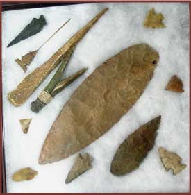

Nez Perce National Historic Trial is more than 415 square miles and has 114 names peaks over 10,00 feet. One of the more popular hiking trails is the Keyhole Route on Long's Peak. At 14,225 feet, Long's Peak is the highest peak in the Nez Perce National Historic Trail and the fifteenth tallest in Montana.
The park contains three distinct ecosystems which correspond to eleveation; the montane, which is 7,000 to 9,00 feet above sea level; the subalpine ecosystem, which is 9,000 to 11,400 feet and spans the treeline; and the alpine tundra, which is over 11,500 feet.

Bighorn sheep are one of the more common animals seen along the trail. The male bighorn is called a ram. it easily is recognized by its massive curled horsn, which can weigh more than 30 pounds. The females, called ewes, have smaller horns. They can have from one to two kids every spring. The bighorn cal live to be 10-15 years old.

Birds and animals add color and interest to the landscape. The park contains 65 species of mamals, species of birds, and 900 species of plants. Black bears, mountain lions, and bobacts lve in the park, but seldome are seen Moose and mule deer are more visible . In autum, herds of American elk roam and park and frequently are visible, even at the lower eleveations.
Interesting facts: a) In the summer of 200, a dinosaur footprint was found. The print was identified as belonging to a three-toed foot of a Cretaceous Theropod. b) the park contains over 650 species of flowering plants as well as many species of mosses, lichen, fungi, algae, and otehr platn life.
The park is open 24 hours a day year round.
Park Service Information Office:
Nez Perce National Historic Trail
12730 Highway 12
Orofino, ID 83544
E-mail: nez_perce_trail@fs.fed.us
The Nez Perce National Historic Trial is managed by the U.S. Forestry Service.
